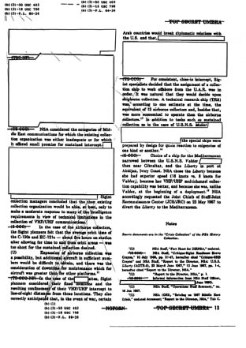
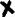

Wikileaks çok ses getiren, hükümetlerin sırlarını ortaya dökmek için kurulduğu savunulan bir internet sitesi olarak ortaya çıktığında herkesten farklı şekilde, şüpheci yaklaşmıştım.
Arkasında akademisyen, gazeteci ve bazı diplomatların olduğu söylense de göz önünde olan tek kişi Jullian Assange diye biri. 38 yaşındaki Avustralyalı Jullian Assange kendini fizik ve matematik öğrencisi, hacker ve bilgisayar programcısı olarak tanıtıyor.
Hacker’lık geçmişi 80’lere dayanan Jullian Assange bu yıllarda International Subversives adında bir hacker grubuna üye oluyor. 1991 yılında yapılan bir polis operasyonunda Avustralya’da bir üniversiteye ait bazı sunuculara, Nortel ve başka firmaların sistemlerine sızmak suçundan yargılanıp para cezası alıyor. Sonrasında internet aktivisti olarak, kendi deyimiyle bilginin gücüne, özgürlüğüne inanarak bunu yaymaya çabalıyor.
Wikileaks’in gerçek manada ses getiren ilk hareketi Afganistan hakkında yayınladığı bilgilerdi. Bu kritik bilgilerde operasyonların ayrıntıları, verilen kayıplar ve öldürülen kişiler ile ilgili önemli konular yer alıyordu. Fakat kaynağı, kesinliği inkâr edilemeyecek bu bilgilerin ardından iş biraz magazine kaydı.
Amerikan hükümeti ve diğer devletlerle ilgili yayınlanan, şu çok yaygara koparan bilgilerin kaynağı SIPRNet denilen askeri bir portal. Portal tanımı pek çok içeriği bir arada bulunduran internet siteleri için kullanılıyor. Örneğin haber portalları gibi... Bu portala bağlanan yaklaşık 2,5 milyon Amerikan hükümeti çalışanı bulunuyor. Belli bir gizlilik derecesindeki bilgiler bu portal üzerinden sürekli olarak hükümet yetkilileriyle paylaşılıyor. Paylaşılan bilgiler gizlilik olarak sadece Confidential ve Secret kategorisinde yer alanlardan ibaret.

Birkaç yıl önce top secret statüsünden çıkarılan örnek bir top secret belge.
Daha önce gerçek anlamda gizli belge görmemiş kişiler bu bilgileri fazlasıyla ciddiye aldılar. Sitenin açıkladığı belgelere baktığımda ise işin gerçek yüzünün pek öyle olmadığını fark ettim. Belgelerin Secret adı verilen seviyenin ilerisine geçemediği görülüyordu. Belgelerin içeriği ise genellikle üst düzey diplomat dedikoduları, resmi yazışmalar ve analizlere dayanıyor. Bu tarz bilgiler aşağı yukarı bilindiği gibi yüksek gizlilik sınıfına kesinlikle giremiyorlar. İster istemez sanki birileri bu bilgilerin sızmasından hoşnutmuş gibi gözüküyordu.
Wikileaks’in yayınladığı belgelerin sayıları ve gizlilik dereceleri;
 15.652 secret
101.748 confidential
133.887 unclassified
Peki nedir yüksek derecede gizlilik? Belge ve bilgilerdeki gizlilik derecesi nasıl ölçülür? Biraz ona bakalım. Elbette bahsedeceklerim ABD hükümeti için geçerli olan kurallara dayanıyor. NATO ve diğer ülkelerin de yer yer benzeşen ama farklı prosedürleri var.
Amerika Birleşik Devletleri sınıflandırma sistemi, bilginin gizlilik açısından sınıflandırılması, zamanı gelince sınıflandırılmanın kaldırılması, ulusal güvenliği ilgilendirecek konudaki bilgilerin hükümet çalışanları, sözleşmeli çalışılan kuruluşlar ve diğer devletlerle paylaşılmasına dair kuralları belirliyor.
Belge ve bilgilerin gizlilik derecelendirmeleri önem sırasıyla;
Unclassified > Restricted > Confidential > Secret > Top Secret olarak sıralanabilir.
5. Unclassified
Bu teknik olarak bir sınıf değil. Bu tarz bilgiler gerektiği zamanlarda serbestçe açıklanır. Genellikle polis, hükümet çalışanı gibi kişilerin açıklama inisiyatifleri vardır. Amerikan vatandaşı olmayanlara açıklanmaz. Fakat 11 Eylül olaylarından sonra diğer ülkelerle bu sınıftaki bilgiler paylaşılıyor.
4. Restricted
İkinci Dünya Savaşı’ndan beridir ABD Restricted derecelendirmesini kullanmıyor. Farklı bir şekilde, bu sınıflandırma sadece nükleer sırlar için kullanılıyor.
3. Confidential
En düşük gizlilik derecesi. Yayınlanması ulusal güvenlik açısından sakıncalı olabilecek bilgileri sınıflandırır.
2. Secret
İkinci yüksek gizlilik sınıfı. Bu şekilde derecelendirilmiş bilgiler yayınlandığı takdirde ulusal güvenliğe zarar verebilir.
1. Top Secret
Ulusal düzeydeki en yüksek gizlilik derecesi. Çok gizli belgelerin yayınlandığında verebileceği “olağanüstü yüksek derecede” zarara dikkat çeker. Genellikle bu tarz bilgiler kozmik adını verdiğimiz sistemlerde saklanırlar. CTS (COSMIC TOP SECRET) olarak geçer.
Wikileaks tarafından yayınlanan belgelerde Confidential ve Secret kategorileri dışında bir bilgi yer almıyor. Merak ettiğim, hacker’lık geçmişi olan, gizli bilginin, gizli belgenin ne olduğunu bilen Jullian Assange’ın bu gizlilik derecesi “abartıldığı kadar yüksek olmayan dedikodu, yorumlara dayalı analiz içeriğini” neden şifreleyip internete koyduğu. Jullian Assange söylediği gibi gerçekten hayati tehlike içerisinde biri mi? Yoksa sadece birilerinin ne düşünmemiz gerektiğine karar vermesini sağlayan ufak bir piyon mu?
Benim görüşüme göre Wikileaks biz şişko çocukların önüne konulmuş bir tabak dolusu fast-food. Öyle gözüküyor ki çoğumuz bunu büyük bir iştahla yiyoruz...